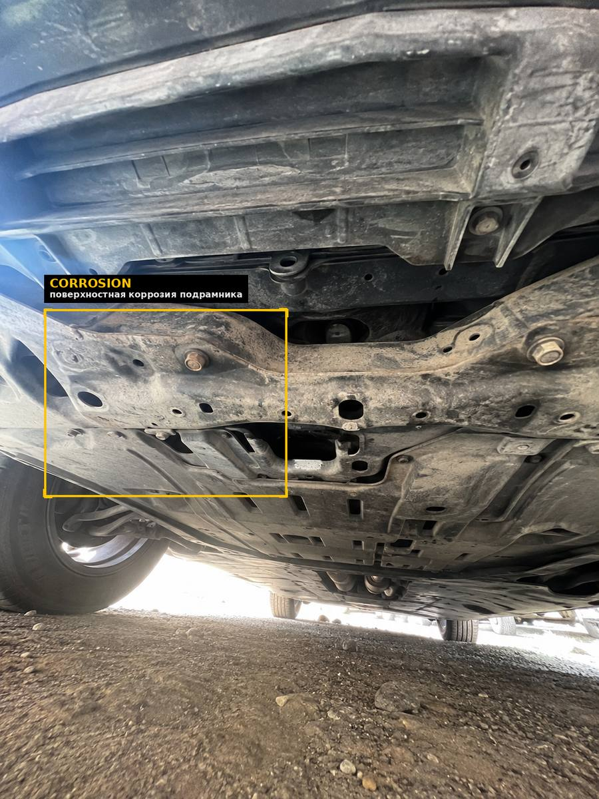

Вернуться назад
Результат сканирования
Демо отчёт
АВТО
Chery Tiggo 7 Pro
ГОД / ПРОБЕГ
2022 г. / 45 000 км
ДАТА СКАНА
21.08.2026, 11:42
ID ОТЧËТА
SCN-77241
61
из 100
Состояние и риски - есть на что обратить внимание
ИИ проанализировал 24 зоны кузова и днища по фото и видео. Обнаружено 4 дефекта, один из них — структурный, требует очного осмотра перед покупкой. Остальное — на уровне обычного естественного износа.
РЫНОК, АНАЛОГИ
7.6M — 8.3M ₸
Chery Tiggo 7 Pro 2022, 45k км
РЕМОНТ 4 ДЕФЕКТОВ
165k — 300k ₸
Ориентир по ценам СТО
СПРАВЕДЛИВАЯ ЦЕНА
7.3M — 8M ₸
Ваш аргумент для торга
Перечень дефектов
4 дефекта · на фото ниже ↓


Критично
Точность 96%

Порог, правая сторона (задняя часть)
Скол/трещина накладки порога с деформацией кромки. Похоже на след удара или контакта с бордюром — нужен очный осмотр кузова в этой зоне.
Ремонт, ориентир
120 000 — 220 000 ₸


Средне
Точность 91%
Порог, правая сторона (боковая часть)
Трещина защитной накладки и точечная коррозия крепёжных элементов рядом с местом повреждения выше.
Ремонт, ориентир
25 000 — 45 000 ₸


Незначительно
Точность 89%
Задний подрамник, буксировочный крюк
Поверхностная ржавчина на крепеже. Типично для авто с пробегом, не влияет на конструктив на данном этапе.
Обработка от коррозии
10 000 — 15 000 ₸

Незначительно
Точность 87%
Подрамник / передняя траверса
Точечная поверхностная коррозия на защитных элементах днища. В пределах нормы для региона с реагентами.
Обработка от коррозии
10 000 — 20 000 ₸
Рекомендация
ОЧНЫЙ ОСМОТР: ПОРОГ
Структурное повреждение правого порога - основной фактор оценки. Перед покупкой очно или у кузовщика осмотрите эту зону, чтобы исключить ремонт после серьезного ДТП.
Остальные дефекты — не критичны и типичны для пробега 3-5 лет.
Отчёт сформирован ИИ на основе фото/видео, загруженных пользователем через scans.kz. Оценка носит информационный характер и не заменяет юридическую проверку (обременения, залоги, история регистрации) и офлайн-диагностику у эксперта. Точность обнаружения дефектов — 87-98% по данным валидации модели. Это демо-версия отчёта на основе реальных фото одного автомобиля.